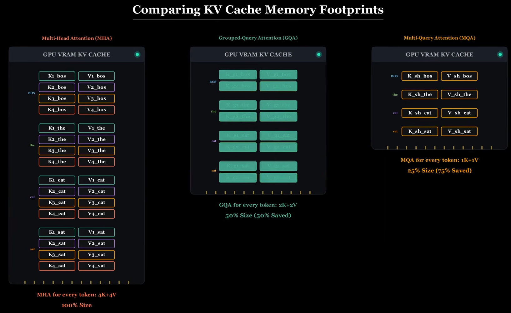
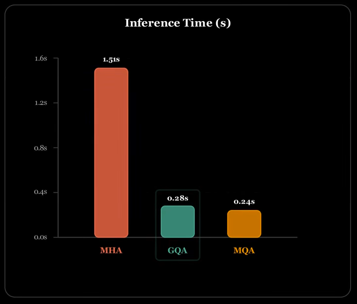
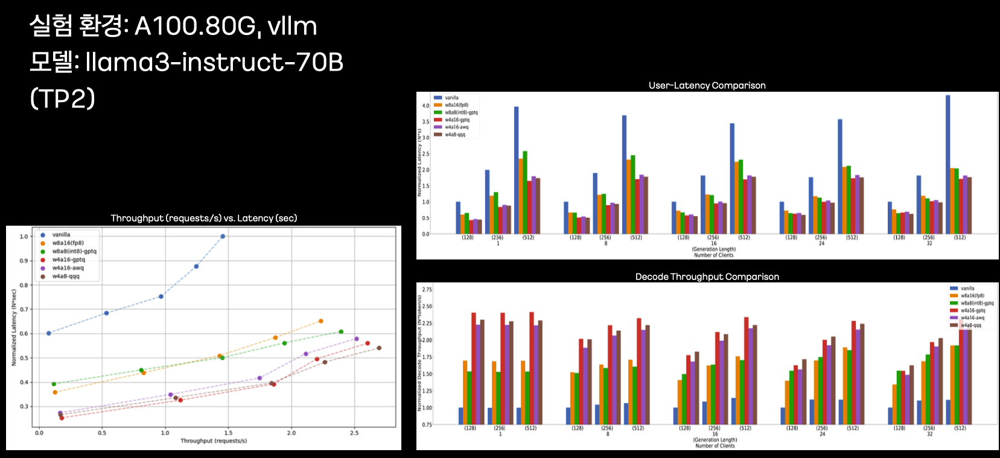
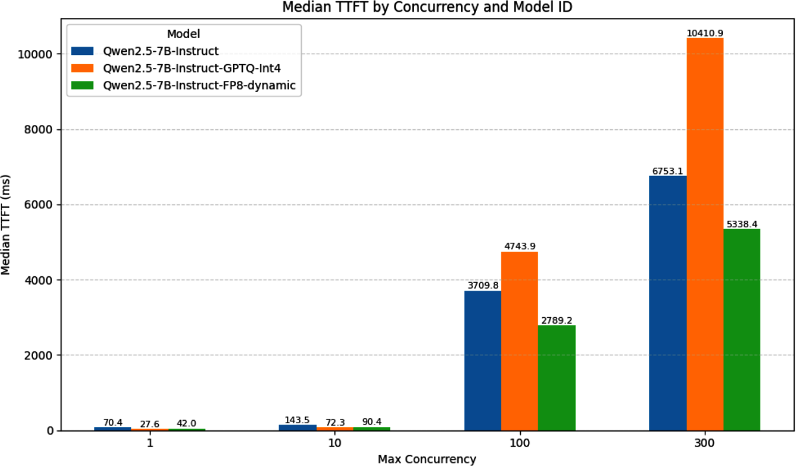
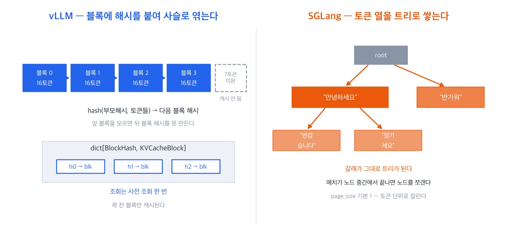

시작하며
CH5에서 우리는 LLM 서빙의 근본 병목 두 가지를 확인했습니다 — 모델 로딩(가중치+KV 캐시가 GPU 메모리를 초과할 수 있음)과 모델 실행(저배치 Decode는 대개 메모리 대역폭 제한). CH6은 이 두 병목을 실제로 완화하는 4개 층위의 기법을 다룹니다.
📌 CH5를 안 읽고 오셨다면 30초 복습: KV 캐시는 이전 토큰 계산 결과를 저장해두는 공간인데, 대화가 길어지거나 동시 요청이 많아지면 모델 자체보다 커질 수 있습니다. Decode(토큰을 한 개씩 만드는 단계)는 항상 "메모리에서 데이터를 읽어오는 속도"가 병목이라 GPU의 연산력을 다 못 씁니다. 이 두 가지만 기억하면 아래 기법들이 왜 필요한지 바로 이해됩니다.
flowchart LR
P1["① 배칭 · 스케줄링\n(요청을 어떻게 묶을까)"] --> P2["② 어텐션 · 커널 최적화\n(연산·메모리 접근을 어떻게 빠르게)"]
P2 --> P3["③ 모델 압축\n(모델 자체를 어떻게 작게)"]
P3 --> P4["④ 프리픽스 캐싱\n(중복 계산을 어떻게 생략)"]
1. 요청 배칭과 스케줄링 최적화
CH5에서 배웠듯 Decode는 산술 강도가 낮아 GPU 연산력을 다 못 씁니다. 배칭(batching)은 여러 요청을 묶어 행렬의 배치 차원을 키움으로써 산술 강도를 인위적으로 끌어올리는 기법입니다 — 모델 가중치를 한 번만 읽으면서, 그 한 번으로 여러 토큰을 동시에 생성합니다.
동적 배칭의 한계: LLM은 "손님마다 식사 시간이 다르다"
식당에 8인용 테이블이 하나 있고, 손님은 "테이블이 다 찰 때까지(또는 일정 시간이 지날 때까지)" 기다렸다가 한꺼번에 그룹으로 앉힙니다. 문제는 이 테이블이 그룹 전원이 식사를 마쳐야만 치워지고 다음 그룹을 받을 수 있다는 것 — 유독 천천히 먹는 손님 한 명(=출력 길이가 긴 요청 하나) 때문에, 이미 다 먹은 나머지 손님들의 빈 그릇 자리도 치워지지 않고 낭비되며(=GPU가 놀고 있음), 밖에서 기다리는 대기 손님들은 테이블 전체가 빌 때까지 아예 입장도 못 합니다.
해법: 연속 배칭(Continuous Batching)
이제 이 식당은 8인 단체석을 없애고, 좌석 하나하나를 독립적으로 운영합니다. 어느 손님이든 식사를 마치고 일어나면, 웨이터가 다음 서빙 타이밍에 대기줄의 다음 손님을 그 자리에 앉힙니다. 옆 좌석 손님이 아직 절반밖에 안 먹었어도 상관없습니다 — 각 좌석은 서로 독립적으로 회전하므로, 대기 중인 요청과 여유 KV 캐시가 충분한 한 GPU가 노는 시간을 크게 줄일 수 있습니다(다만 대기줄이 비어 있거나 메모리 여유가 없으면 좌석이 빌 수밖에 없으므로, "유휴 시간이 0"이라고 보장하지는 않습니다).
연속 배칭에서 튜닝하는 3대 파라미터:
| 파라미터 | 의미 |
|---|---|
--max-num-seqs | 한 스텝에서 동시에 처리할 최대 요청 개수 |
--max-model-len | 요청 1개가 가질 수 있는 최대 토큰 길이 |
--max-num-batched-tokens | 한 스텝에서 배치 전체가 처리하는 총 토큰 수 상한 (예: "20토큰 10개"와 "10만 토큰 2개"를 구분하기 위함) |
vllm serve Qwen/Qwen2.5-7B-Instruct \
--max-num-batched-tokens 4096 \
--max-num-seqs 128 \
--max-model-len 1024또 다른 문제: Prefill이 Decode를 막아선다
Prefill(입력 프롬프트 전체를 이해하는 단계)은 "주문을 받은 뒤 주방에서 요리를 준비하는 시간"과 같습니다 — 아직 테이블에는 아무것도 나오지 않았고(아직 첫 토큰이 없음), 이 시간이 길수록 손님은 "언제 첫 요리가 나오나"(TTFT)를 초조하게 기다립니다. Decode(토큰을 하나씩 생성하는 단계)는 "한 접시가 나올 때마다 한입씩 먹으며 다음 접시를 기다리는 것"과 같습니다 — 다만 주방(GPU)이 매 접시(토큰)마다 짧게라도 다시 한 번 조리를 해야 하므로("이미 나온 요리를 그냥 먹기만 하는" 것이 아니라 매 토큰마다 실제로 가벼운 연산이 한 번씩 반복됩니다), 이 자체는 가볍지만 반복적인 작업입니다.
연속 배칭도 완벽하지 않습니다. Prefill(계산량 많음, CH5에서 배운 연산 제한)과 Decode(가벼움, 메모리 대역폭 제한)를 무작정 같은 스텝에 섞으면, 새로 들어온 긴 프롬프트의 Prefill이 한 스텝의 토큰 예산을 크게 차지하면, 이미 진행 중이던 Decode 요청들이 다음 스텝까지 지연되어 토큰 간 간격(ITL)이 크게 나빠질 수 있습니다 — 마치 새 단체 손님의 요리를 준비하느라 주방을 통째로 비우면, 이미 식사 중인 손님들이 다음 한 입을 한참 못 받는 것과 같습니다.
해법: 청크 프리필(Chunked Prefill)
긴 Prefill을 Decode 박스와 비슷한 크기의 여러 조각으로 쪼개, Decode 스텝 사이사이에 끼워 넣습니다. 트레이드오프가 있습니다 — 토큰 간 지연(ITL)은 개선되고 전체 처리량도 오르지만, 새로 온 요청의 첫 토큰까지 시간(TTFT)은 약간 늘어납니다. "공짜 점심은 없다"는 원칙이 여기서도 적용됩니다.
2. 스케일링 어텐션과 GPU 커널 최적화
어텐션의 진화: MHA → MQA → GQA → MLA
KV 캐시(CH5에서 배운 그 골칫거리)를 줄이는 것이 목표입니다.
flowchart LR
MHA["MHA\nKV 캐시 100%\n(쿼리마다 고유 K/V)"] --> MQA["MQA\nKV 캐시 ~1/32~1/64\n(모든 쿼리가 K/V 1개 공유)\n⚠ 품질 저하 위험(학습 방식에 따라 다름)"]
MHA --> GQA["GQA\nKV 캐시 12.5~50% (그룹 크기에 따라 다름)\n균형점, 많은 최근 오픈 모델에서 채택"]
MHA --> MLA["MLA (DeepSeek)\nlatent로 압축\nGQA 2.25그룹 수준이면서\n성능은 MHA급이라고 주장"]
GQA의 정확한 절감 비율은 "쿼리 헤드 몇 개가 K/V 헤드 하나를 공유하는가"(그룹 크기)에 따라 달라집니다 — 그룹 크기가 클수록 캐시는 더 줄지만 정확도 손실 위험도 커집니다. 실제 예시: Llama-3는 쿼리 헤드 32개, KV 헤드 8개(그룹 크기 4:1)를 씁니다 —
config.json의num_key_value_heads값만 봐도 KV 캐시가 얼마나 절감되는지 바로 알 수 있습니다(32÷8=4배 압축, KV 캐시는 MHA 대비 25%).
⚠ 정정(교차검증 반영): MLA를 "무손실(lossless) 압축"이라고 표현하는 자료도 있지만, 이는 과장입니다. latent 공간으로 투영하는 것은 일반적으로 정보를 압축하는 과정이며, DeepSeek의 주장은 "정보를 전혀 잃지 않는다"가 아니라 "GQA 2.25개 그룹 수준의 작은 캐시로도 MHA보다 강한 성능을 낸다"는 것입니다. "무손실"보다는 "정보를 최대한 보존하도록 학습된 압축"이 정확한 표현입니다.
MHA·MQA·GQA·MLA 하나씩 뜯어보기
기호를 하나 정의하고 시작합니다 — H_q는 Query head 수, H_kv는 Key/Value head 수입니다. 다른 조건이 같다면 KV 캐시 용량은 대략 H_kv ÷ H_q에 비례합니다(head 하나당 저장 용량은 동일하다고 가정).
| 방식 | 정의 · 설계 의도 | Head 관계(공유 비율) | 대표 모델 |
|---|---|---|---|
| MHA | 각 Query head에 별도의 K/V head를 둔다. 2017년 원조 Transformer 설계 그대로 — 여러 head가 서로 다른 표현 공간을 배우게 해 표현력을 극대화하는 것이 목적이며, 서빙 효율은 애초 고려 대상이 아니었다. | H_kv = H_q (1:1, 공유 없음) | GPT-3, Llama-1 계열, Llama-2 7B/13B |
| MQA | 모든 Query head가 K/V head 단 1개를 공유한다. Decode마다 KV 캐시 전체를 HBM에서 읽어야 하는 대역폭 병목을 근본적으로 줄이려는 목적(Shazeer, 2019). | H_kv = 1 (예: H_q=32면 캐시 1/32) | PaLM(2022), Falcon 7B/40B |
| GQA | Query head를 여러 그룹으로 나누고, 그룹마다 K/V head 하나를 공유한다. MHA의 표현력과 MQA의 메모리 절감 사이의 절충점을 찾고, 기존 MHA 체크포인트를 적은 추가 훈련만으로 "업사이클"할 수 있게 하려는 목적(Ainslie et al., 2023). | 1 < H_kv < H_q, 그룹당 H_q/H_kv개 Query head 공유 | Llama-2-70B, Llama-3 전 계열, Mistral-7B, Qwen2/2.5 |
| MLA | K/V를 head 단위로 그대로 저장하는 대신, 훨씬 저차원인 잠재 벡터(latent, DeepSeek-V2 기준 차원 512)로 압축해 캐싱하고 필요 시 다시 복원한다. GQA로도 부족한 초장문 컨텍스트에서 캐시를 더 줄이면서 MHA급 품질을 유지하려는 목적. RoPE 위치 인코딩과 호환을 위한 별도의 "분리된(decoupled) RoPE" 설계도 포함된다. | head 비율로 단순 환산 불가 — 잠재 차원과 분리된 RoPE 차원이 함께 캐시 크기를 결정 | DeepSeek-V2, V3, R1 |
GQA 실제 절감률 예시 (모두 config.json의 num_attention_heads÷num_key_value_heads로 직접 확인 가능):
| 모델 | Query head | KV head | 그룹 크기 | KV 캐시(MHA 대비) |
|---|---|---|---|---|
| Llama-3-8B | 32 | 8 | 4:1 | 25%(75% 절감) |
| Llama-2-70B | 64 | 8 | 8:1 | 12.5%(87.5% 절감) |
| Mistral-7B | 32 | 8 | 4:1 | 25%(75% 절감) |
※ 이 표의 절감률은 위 세 모델 각각의 설정값이며, "GQA는 항상 25%다" 같은 단일 숫자로 일반화해서는 안 됩니다 — 그룹 크기가 다르면 절감률도 달라집니다. MLA도 마찬가지로 "MHA 대비 몇 %"라는 고정 숫자보다는, DeepSeek-V2 논문이 자체 비교 대상(이전 세대 DeepSeek 67B dense 모델)을 기준으로 KV 캐시 93.3% 감소, GQA 2.25개 그룹과 동등한 캐시 크기를 보고했다는 조건부 사실로 이해하는 것이 정확합니다.
같은 원리를 아주 작은 예로 다시 확인해볼 수 있습니다 — Query head가 단 4개뿐인 장난감(toy) 모델을 가정하면, MHA는 head마다 K/V를 따로 두므로 캐시가 100%(토큰당 K 4개+V 4개)입니다. 이 4개를 2개 그룹으로 묶는 GQA(2:1 비율)는 K/V가 2쌍만 있으면 되므로 캐시가 50%(토큰당 K 2개+V 2개)로 줄고, 모든 head가 K/V 1쌍을 공유하는 MQA는 25%(토큰당 K 1개+V 1개, 75% 절감)까지 줄어듭니다. 이 4-head 예시(2:1 그룹→50%)와 위 표의 Llama-3-8B 예시(4:1 그룹→25%)를 나란히 놓고 보면, "그룹을 몇 개로 묶느냐"가 절감률을 직접 결정한다는 것이 다시 한 번 확인됩니다.

장단점 요약 — MHA는 head마다 독립된 K/V를 가져 표현력에서 손해를 보지 않는 기준 구조지만 캐시·대역폭 부담도 가장 크고, MQA는 캐시를 가장 크게 줄이지만 여러 Query가 같은 K/V만 보므로 복잡한 문맥에서 품질 손실 위험이 있을 수 있어(항상 그런 것은 아니며 학습 방식·규모에 좌우됩니다) 최근에는 GQA에 밀리는 추세입니다. GQA는 그룹 크기라는 손잡이로 캐시와 품질을 조절할 수 있어 많은 최근 오픈소스 LLM에서 널리 채택되고 있고, MLA는 구현이 가장 복잡하지만(전용 압축·복원 행렬, RoPE 분리 처리, FlashMLA 같은 전용 커널 필요) DeepSeek-V2는 이 방식으로 GQA보다 더 작은 캐시에서도 MHA보다 강한 성능을 보고했습니다(해당 논문의 비교 조건 기준).
💡 참고: 캐시 크기 차이가 실제 속도로도 이어질까? 한 실측 예시(모델·GPU·배치 조건은 원문에 명시되어 있지 않아 "특정 실험 조건 기준"으로만 이해해야 합니다)에서는 어텐션 방식별 추론 시간이 MHA 1.51초, GQA 0.28초, MQA 0.24초로 측정되어, 이 실험에서는 GQA가 MHA보다 약 5.4배, MQA는 약 6.3배 빨랐습니다. 절대적인 배수는 모델 크기·시퀀스 길이·배치 크기·GPU 종류에 따라 크게 달라지지만, KV 캐시를 줄이는 것이 이론적인 수치놀음이 아니라 실제 추론 속도에도 큰 영향을 줄 수 있다는 것을 보여주는 구체적인 사례입니다.

※ 시각화 편의상 Query head 8개를 기준으로 그렸습니다 — 실제 모델은 보통 32~64개를 씁니다.
커널 최적화: 같은 계산도 더 빠르게
① 커널 퓨전 — 여러 개별 연산을 하나로 합쳐, 중간 결과를 GPU 메모리(HBM)에 썼다가 다시 읽는 왕복을 없앱니다.
FlashAttention은 큰 중간 계산 결과를 매번 큰 연습장(HBM, 느림)에 썼다 지웠다 하지 않고, 최대한 암산(SRAM, 빠름)으로 계산한 뒤 최종 답만 연습장에 적는 것과 같습니다. 어텐션 연산을 작은 블록으로 쪼개(타일링) SRAM 안에서 처리하고, "온라인 소프트맥스"(전체 데이터를 한 번에 못 보고 조금씩만 볼 때도, 부분합을 계속 고쳐가며 나중에 전체를 다 본 것과 똑같은 정답을 만들어내는 계산 요령)라는 기법으로 블록 단위 중간값을 정답 손실 없이 그때그때 누적합니다.
③ PagedAttention — 운영체제가 메모리를 페이지 단위로 관리하는 방식을 KV 캐시에 응용합니다.
책 내용을 반드시 연속된 페이지에 인쇄할 필요 없이, 흩어진 페이지 번호를 "블록 테이블"이라는 색인으로 기억해두는 것과 같습니다. KV 캐시를 고정 크기 블록으로 나누고 블록 테이블로 관리하면, 연속된 메모리 공간이 없어도 됩니다.
효과: PagedAttention이 없으면 KV 캐시 메모리의 20.4~38.2%만 실제로 쓰이고 나머지는 예약해놓고 못 쓰는 낭비(단편화)로 남습니다. PagedAttention을 적용하면 이 낭비가 거의 0에 가까워집니다 — 원 논문(Kwon et al., SOSP 2023)은 블록 단위로 관리하기 때문에 마지막 블록에서만 생기는 내부 단편화를 4% 미만 수준까지 줄였다고 보고했습니다(전체 활용률 수치와는 다른 층위의 지표입니다).
3. 모델 압축: 양자화, 증류, 가지치기
flowchart TD
BIG["원본 LLM"] --> Q["① 양자화\n숫자 정밀도를 낮춤"]
BIG --> D["② 증류\n큰 Teacher → 작은 Student"]
BIG --> P["③ 가지치기\n불필요한 weight 제거"]
Q --> S1["메모리·연산 즉시 절감\n(추가 학습 거의 불필요, 가장 실용적)"]
D --> S2["가장 큰 개선 잠재력\n but 훈련 비용 크고 어려움"]
P --> S3["파라미터 감소\n(세 기법 중 채택 사례 가장 적음)"]
양자화가 가장 실용적인 이유
양자화는 지도의 좌표를 더 굵은 격자로 적어 종이(메모리)와 운반량(데이터 이동)을 줄이는 것과 비슷합니다. 약간의 오차가 생기지만(반올림 오차·클램핑 오차), 최신 기법은 "스케일링"으로 이 오차를 최소화합니다.
양자화가 서빙에 도움이 되는 3가지 이유:
- 모델 크기 감소: Llama-2-7b(14GB, FP16)를 INT8로 바꾸면 즉시 7GB(정확히 절반)로 줄어듭니다.
- 데이터 이동량 감소 → 지연시간 개선: Decode는 메모리 대역폭 제한이므로(CH5), 모델이 작아지면 옮길 데이터 자체가 줄어 바로 빨라집니다.
- 연산 속도 및 대역폭 절감: FP8을 적용하면 디코딩(Decode) 단계에서는 옮겨야 할 HBM 데이터량 자체가 절반으로 줄어 지연시간이 크게 개선되고(CH5에서 배운 "Decode는 메모리 대역폭 제한"의 직접적인 수혜), 프리필(Prefill) 단계나 고배치·고동시성 서빙처럼 연산 제한 구간에서는 하드웨어 Tensor Core의 피크 연산 성능(H100 기준 FP16 1,979 TFLOPS → FP8 3,958 TFLOPS, 약 2배)까지 함께 가속됩니다. 즉 "2배"는 피크 연산 성능 얘기이고, 저배치 디코딩이 실제로 빨라지는 이유는 대역폭 절감 쪽이 더 큽니다.
실전 사례(GPT-OSS): gpt-oss-120b(약 1,170억 파라미터)는 MoE(Mixture-of-Experts) 레이어를 MXFP4(아래 "최신 동향"에서 다룰 마이크로스케일링 4비트 포맷, 파라미터당 0.5바이트)로 훈련 단계부터 양자화(QAT, Quantization-Aware Training)한 뒤 이미 공개·배포되었습니다. MoE 레이어가 전체 파라미터의 90% 이상을 차지하기 때문에 전체를 FP4로 근사하면 117×10⁹×0.5바이트 ≈ 58.5GB로, 단일 80GB GPU 한 대에 들어간다는 계산이 나옵니다(실제 배포 시에는 여기에 KV 캐시·런타임 버퍼·통신 공간이 추가로 필요합니다). 단, FP4는 최신 Blackwell GPU에서만 네이티브로 잘 지원되고, 구형 GPU에서는 지원이 부실할 수 있습니다.
PTQ vs QAT: "언제" 양자화하는가
PTQ(Post-Training Quantization, 훈련 후 양자화)는 이미 다 배운(훈련된) 모델을 나중에 "저해상도 안경"을 씌우는 것과 같습니다 — 빠르고 간단하지만 안경에 적응할 시간이 없어 약간 헷갈릴 수 있습니다. QAT(Quantization-Aware Training, 양자화를 고려한 훈련)는 처음부터 그 안경을 쓰고 공부하는 것과 같습니다 — 시간과 비용이 더 들지만 실전(저정밀도 환경)에 훨씬 잘 적응합니다.
실무에서는 압도적으로 PTQ를 먼저 시도합니다(추가 훈련이 거의 필요 없어 몇 분~몇 시간 안에 끝남). 아래는 실제로 널리 쓰이는 PTQ 도구들입니다 — 이름은 낯설어도 "누가 어떤 상황에 쓰는가"만 기억하면 충분합니다.
| 기법/도구 | 핵심 아이디어(한 줄) | 주로 쓰는 상황 |
|---|---|---|
| GPTQ | 가중치를 순서대로 양자화하면서, 생기는 오차를 아직 처리 안 한 나머지 가중치에 똑똑하게 나눠 보정 | 3~4비트까지 압축, GPU 서빙(vLLM 등) · llama.cpp 생태계와 호환성 좋음 |
| AWQ | 모든 가중치가 똑같이 중요하지 않다는 발견 — "특히 중요한 가중치 상위 1%"만 보호하고 나머지를 과감히 압축 | 4비트 양자화에서 GPTQ보다 대체로 더 높은 정확도, 양자화 속도도 더 빠름 |
| SmoothQuant | 가중치는 원래 압축하기 쉬운데 활성화값에 몰린 "이상치"가 문제 — 압축 난이도를 활성화에서 가중치 쪽으로 미리 옮겨줌 | 가중치+활성화값을 모두 INT8로(W8A8) 압축해 대규모 서빙 처리량을 극대화하고 싶을 때 |
| bitsandbytes(NF4) + QLoRA | 모델을 4비트로 양자화해 GPU에 올린 뒤, 그 위에 작은 학습 가능 레이어(LoRA)만 얹어 파인튜닝 | 70B급 모델을 개인 GPU 한 장으로 직접 파인튜닝하고 싶을 때 |
| GGUF (llama.cpp) | 특정 알고리즘이 아니라 "파일 포맷+실행 엔진" — 여러 비트 폭(Q4, Q5, Q8...) 프리셋을 표준화 | 노트북 CPU·Mac(Apple Silicon)·모바일 등 GPU 없는 환경에서 로컬 실행 |
이 도구들이 실제로 얼마나 널리 쓰이는지 감이 잘 안 온다면, Hugging Face의 인기 베이스 모델 하나를 살펴보는 것으로 충분합니다 — Qwen2.5-7B-Instruct의 "Model tree"(특정 시점 스냅샷)에는 이 모델에서 파생된 Adapters 398개, Finetunes 2,329개, Merges 113개와 함께 Quantizations만 191개가 등록되어 있습니다. 이 숫자는 계속 변하는 허브의 캡처 시점 값일 뿐이지만, 양자화가 몇몇 연구실의 실험이 아니라 인기 모델 하나에도 커뮤니티가 수백 개의 변형을 만들어낼 만큼 실무에서 일상적으로 쓰이는 기법이라는 것을 보여줍니다.
📊 실제로 얼마나 정확할까? 최근 벤치마크(2025)에 따르면 GPTQ·AWQ 모두 4비트에서는 원본(FP16) 대비 성능을 거의 그대로 유지하지만, 단순 반올림(RTN) 방식은 4비트에서 이미 성능이 무너지기 시작합니다. 3비트 이하로 내려가면 GPTQ·AWQ도 급격히 나빠지고, 2비트는 사실상 사용 불가 수준이 됩니다 — 그래서 "4비트가 실용적 마지노선"이라는 것이 업계 통념입니다. 같은 4비트 조건에서는 여러 벤치마크에서 AWQ가 GPTQ보다 조금씩 더 나은 경향을 보이지만, GPTQ는 더 낮은 비트(2~3비트)나 GGUF/llama.cpp 생태계 호환성에서 강점이 있습니다.
구체적인 수치로 확인해 보면 다음과 같습니다(Meta-Llama-3.1-Instruct 계열 기준 — v1은 상대적으로 쉬운 평가 세트, v2는 더 어려운 평가 세트입니다):
| 모델 크기 | 벤치마크 | BF16 | W8A8(FP8) | W8A8(INT8) | W4A16 |
|---|---|---|---|---|---|
| 405B | v1 | 86.8 | 86.8 | 86.2 | 86.8 |
| v2 | 48.7 | 48.3 | 48.2 | 47.9 | |
| 70B | v1 | 84.5 | 84.2 | 84.3 | 84.0 |
| v2 | 41.7 | 41.4 | 40.5 | 40.6 | |
| 8B | v1 | 74.1 | 73.6 | 74.2 | 73.5 |
| v2 | 27.6 | 28.1 | 28.0 | 26.5 |
가장 눈에 띄는 지점은 405B 모델의 v1 벤치마크에서 W4A16(86.8)이 BF16(86.8)과 완전히 동일한 점수를 냈다는 것입니다. W4A16과 BF16의 격차는 대체로 1포인트 안팎이며, 이 표에서 가장 크게 벌어진 경우(70B·8B의 v2 벤치마크)도 1.1포인트였습니다 — 잘 선택한 4비트 양자화가 품질을 상당히 보존할 수 있음을 보여주는 실제 벤치마크 근거이지만, 모든 모델·모든 태스크에 대한 보증은 아닙니다.
정확도뿐 아니라 처리량·지연시간도 실제 프로덕션급 벤치마크에서 확인됩니다 — A100 80GB+Kanana Essence Instruct, H100+Kanana, GH200+Kanana, A100 80GB+Llama-3-70B-Instruct(2-way tensor parallel) 등 네 가지 하드웨어·모델 조합에서, w8a16(FP8)·w8a8(INT8, SmoothQuant)·w4a16(GPTQ/AWQ)·w4a8(QQQ) 양자화 기법들이 비양자화(vanilla) 모델보다 더 나은 처리량-지연시간 곡선(같은 지연시간에서 더 높은 처리량, 또는 같은 처리량에서 더 낮은 지연시간)을 그렸습니다. 디코딩 처리량 개선폭은 이 네 benchmark에서 vanilla 대비 대략 1.2~2.4배 범위로 나타났습니다(막대그래프 기반 추정치이므로, 정확한 배수 하나보다는 "이 조건들에서는 양자화가 처리량을 끌어올리는 경향을 보였다" 정도로 이해하는 것이 안전합니다). 다만 이 개선이 모든 동시성 구간에서 유지되는 것은 아닙니다 →

⚠️ 양자화가 항상 빠른 것은 아니다 — 동시성에 따라 달라진다
Qwen2.5-7B-Instruct를 BF16·GPTQ-Int4·FP8-dynamic 세 가지로 서빙하며 동시성(동시 요청 수)을 바꿔가며 측정한 실험(특정 실험 조건 기준)에서는 다음과 같은 Median TTFT(ms)가 나왔습니다:
| 동시성 | BF16 | GPTQ-Int4 | FP8-dynamic |
|---|---|---|---|
| 1 | 70.4 | 27.6 | 42.0 |
| 10 | 143.5 | 72.3 | 90.4 |
| 100 | 3,709.8 | 4,743.9 | 2,789.2 |
| 300 | 6,753.1 | 10,410.9 | 5,338.4 |

동시성이 낮을 때(1, 10)는 이 실험에서 GPTQ-Int4·FP8 둘 다 BF16보다 확실히 빠릅니다. 그런데 동시성이 100을 넘어가면 GPTQ-Int4가 이미 BF16보다 느려지기 시작하고(4,743.9ms vs 3,709.8ms, 약 28% 느림), 동시성 300에서는 GPTQ-Int4의 TTFT(10,410.9ms)가 BF16(6,753.1ms)보다 오히려 54% 더 느려집니다. FP8-dynamic만 이 실험의 모든 동시성 구간에서 BF16보다 빠른 상태를 유지했습니다.
이 역전 현상은 CH5에서 배운 연산 제한(compute-bound) vs 메모리 대역폭 제한(memory-bound) 개념과 연결지어 볼 수 있습니다. 동시성(배치 크기)이 낮을 때는 Decode가 메모리 대역폭 제한적이므로, 옮겨야 할 가중치 데이터량 자체를 줄이는 양자화(GPTQ-Int4든 FP8이든)가 그대로 지연시간 개선으로 이어집니다. 하지만 동시성이 커지면 이 절 서두에서 배운 배칭의 원리와 같은 이유로 연산이 점점 연산 제한(compute-bound) 구간으로 옮겨가는데, 이때는 "데이터를 얼마나 적게 옮기는가"보다 "GPU Tensor Core가 그 정밀도를 얼마나 빠르게 실제로 계산할 수 있는가"가 더 중요해집니다. GPTQ 같은 weight-only 양자화(W4A16)는 연산 시점에 저정밀 가중치를 다시 고정밀로 되돌리는 역양자화(dequantization) 과정이 필요한데, 이 오버헤드가 고동시성·고배치 구간에서 커지는 것이 역전의 한 원인일 가능성이 있습니다(정확한 원인은 원문에 명시되어 있지 않으므로 이는 CH5 개념에 기반한 추정입니다). FP8은 이를 지원하는 최신 GPU의 Tensor Core가 해당 정밀도를 네이티브로 계산할 수 있어 별도의 역양자화가 필요 없는 것도, 고동시성 구간에서 계속 빠른 상태를 유지하는 데 유리하게 작용했을 것으로 보입니다.
※ Median TPOT(토큰 간 지연)에서는 이 정도로 극적인 역전은 나타나지 않습니다 — 동시성 300 기준 BF16 138.3ms, GPTQ 101.6ms, FP8 86.4ms로, 이 구간에서는 GPTQ도 여전히 BF16보다 빠릅니다. 즉 역전 현상은 TTFT(prefill 성격이 강함)에서 두드러지고, TPOT(decode 성격이 강함)에서는 상대적으로 덜합니다.
증류(Distillation): 학생이 스승을 넘어설 수도 있다
증류는 모델을 줄이는 게 아니라 완전히 새로운 작은 모델("학생")을 훈련시켜 큰 모델("교사")을 모방하게 만드는 방식입니다. 무엇을 모방하게 하느냐에 따라 세 갈래로 나뉩니다.
- 결과 기반(response-based): 교사의 최종 답(출력 확률분포)만 따라 하기. 가장 간단하고 널리 쓰임.
- 특징 기반(feature-based): 교사의 중간 사고 과정(은닉층 값)까지 따라 하기. 더 풍부하지만 구현이 까다로움.
- 관계 기반(relation-based): 교사가 여러 개념 사이를 "어떻게 연결짓는지" 그 관계 자체를 따라 하기.
DeepSeek-R1(671B)을 70B로 증류한 모델은 수학 벤치마크(MATH-500)에서 97.3→94.5로, 파라미터를 10배 가까이 줄여도 성능 하락은 크지 않았습니다.
다른 유명한 증류 사례들을 보면 감이 더 잘 옵니다:
| 사례 | 결과 |
|---|---|
| DistilBERT (Hugging Face) | 파라미터 40% 감소, 추론 60% 더 빠름, 성능은 원본의 약 97% 유지 |
| TinyBERT-4 | 파라미터를 원본의 13.3%까지 줄이고도 준수한 성능 유지 |
| Llama 3.2 3B (Meta) | 교사(8B) 성능(MMLU 66.7)에는 못 미치지만 3B로도 58.0 달성 |
| NVIDIA Minitron | 가지치기+증류로 학습 토큰을 최대 40배 절감하면서도, 특정 벤치마크(코딩·수학)에서는 학생이 교사보다 더 높은 점수를 기록 |
※ 위 수치들은 각 논문·공식 발표가 보고한 특정 모델·데이터셋·벤치마크 조건에서 측정된 값이며, 다른 모델이나 태스크에 그대로 적용된다고 보장되지는 않습니다.
증류 과정에서 학생은 원본 데이터뿐 아니라 "교사가 이미 한 번 정제한 지식"까지 더해서 학습합니다. 게다가 가지치기로 불필요한 부분을 먼저 덜어낸 뒤 남은 부분을 집중적으로 재훈련하면, 같은 크기의 모델을 처음부터 훈련시키는 것보다 오히려 더 효율적인 결과가 나올 수 있습니다.
실전 권장 순서: 이미 증류된 모델이 있으면 그것부터 써보고 → 없으면 비용이 훨씬 낮은 양자화부터 시도 → 증류 모델에 양자화를 추가로 얹는 것도 가능합니다(상호 보완적, 훈련 비용은 원본 모델 훈련비의 최대 10%까지 들 수 있어 직접 하기엔 진입장벽이 높습니다).
가지치기(Pruning): 안 쓰는 뉴런을 솎아내기
나무의 모든 가지가 다 필요한 건 아닙니다. 열매를 맺지 않는 가지를 잘라내도 나무는 잘 자랍니다 — 마찬가지로 모델 안의 가중치 중에는 결과에 거의 영향을 주지 않는 것들이 있어, 이를 찾아 제거합니다.
이름이 붙은 대표적인 두 기법이 있습니다.
- SparseGPT: GPTQ와 비슷한 방식으로, 가중치를 제거하면서 생기는 오차를 헤시안 역행렬 계산을 통해 남은 가중치에 정교하게 보정합니다. 정확도는 좋지만 이 재구성(reconstruction) 연산 때문에 계산 비용이 큽니다(70B 모델 기준 GPU 1장에서 약 75분 소요된 벤치마크 사례가 있습니다).
- Wanda: "가중치 크기 × 실제 입력값 크기"라는 간단한 기준만으로 중요도를 매겨 제거합니다. SparseGPT와 달리 헤시안 역행렬이나 가중치 재구성 연산이 전혀 필요 없이 단 한 번의 forward pass만으로 끝나기 때문에, SparseGPT보다 몇 배 이상 빠르면서도 비슷한 수준의 정확도를 유지합니다(정확한 배수·소요 시간은 모델 크기와 하드웨어에 따라 달라집니다).
구조적(structured) vs 비구조적(unstructured) 가지치기 — 왜 구분이 중요할까요?
가중치를 아무 위치에서나(비구조적) 제거하면 정확도는 가장 잘 보존되지만, GPU는 "듬성듬성 뚫린 구멍"을 실제 속도 향상으로 연결하지 못합니다(계산을 건너뛸 규칙적인 패턴이 없기 때문). 반면 2:4 구조적 희소성(연속된 숫자 4개마다 정확히 2개를 0으로 만드는 규칙적인 패턴)처럼 정해진 규칙으로 제거하면, NVIDIA GPU의 전용 회로(Sparse Tensor Core, A100/H100/H200 이상)가 그 0들을 실제로 건너뛰어 해당 행렬곱(GEMM) 연산에서 이론상 최대 2배의 처리량을 얻을 수 있습니다 — 다만 이는 그 연산 자체의 이론적 최대치이고, LLM 전체의 실제 추론 속도는 모델 구조·배치 크기·커널 지원 범위에 따라 이보다 낮게 나올 수 있습니다. 또한 규칙을 지켜야 하는 만큼 같은 비율을 지워도 비구조적 방식보다 정확도 손실은 더 큽니다.
세 기법(양자화·증류·가지치기) 중 가지치기는 아직 프로덕션 채택 사례가 가장 적습니다 — 다만 SparseGPT/Wanda로 먼저 가지치기한 뒤 GPTQ/AWQ로 양자화를 얹는 식으로, 여러 기법을 순서대로 겹쳐 쓰는 것도 가능합니다.
🔭 2025~2026년 최신 동향 살짝 엿보기
- 1.58비트(삼진) 양자화의 실용화 — Microsoft의 BitNet b1.58은 가중치를 −1, 0, +1 딱 세 가지 값으로만 표현하도록 처음부터 그렇게 학습합니다. 2025년 공개된 24억 파라미터 모델은 비슷한 크기의 다른 모델이 2~5GB를 쓰는 반면 0.4GB만으로 동작합니다.
- 마이크로스케일링 4비트 포맷: MXFP4 vs NVFP4 — 기존 INT4/FP4는 비교적 큰 블록 전체에 스케일(척도) 하나를 공유하는 경우가 많아 값 범위가 넓으면 오차가 커지기 쉬웠습니다. OCP(Open Compute Project) 표준인 MXFP4는 값 32개마다 작은 스케일(E8M0)을 하나씩 따로 두고, NVIDIA Blackwell(B200/GB200)의 NVFP4는 이보다 더 촘촘하게 값 16개마다 더 정밀한 스케일(FP8 E4M3)을 둡니다 — 블록이 작을수록 그 안의 값 범위에 맞춰 스케일을 조정하기 쉬워 저비트 오차가 줄어든다는 아이디어입니다. 위에서 본 gpt-oss가 바로 MXFP4를 실전에 적용한 사례입니다. 다만 "4비트라서 몇 배 빠르다"는 하드웨어·커널·모델 지원 여부에 따라 달라지므로 일반화할 수 없습니다.
- KV 캐시 자체의 양자화 — CH5에서 배웠듯 컨텍스트가 길어지고 동시 요청이 많아지면 KV 캐시가 모델 크기보다 커질 수 있습니다. 가중치뿐 아니라 KV 캐시 자체를 FP8이나 더 낮은 비트로 저장하는 접근이 늘고 있습니다 — vLLM은
--kv-cache-dtype fp8옵션을 제공합니다(정확한 지원 dtype·GPU는 버전마다 다르므로 사용 시 해당 릴리스 문서를 확인해야 합니다), 연구 단계에서는 KIVI(2024) 같은 기법이 "Key는 채널 단위로, Value는 토큰 단위로" 비대칭적으로 2비트까지 압축해 Llama-2-7B 기준 peak 메모리를 2.6배 줄이고 배치 크기를 최대 4배 키웠다고 보고했습니다. 단, 캐시 용량이 줄어도 압축을 푸는(dequantization) 연산이 추가되므로 지연시간 개선폭은 별도로 측정해야 합니다.- 회전 기반 활성화값 양자화: QuaRot vs SpinQuant — 활성화값에는 특정 채널에 몰린 이상치(outlier)가 있어 낮은 비트로 양자화하기 어렵습니다. QuaRot(NeurIPS 2024)은 무작위 회전 행렬(Hadamard 행렬)을 곱해 이 이상치를 여러 채널에 고르게 분산시킵니다. SpinQuant(ICLR 2025)는 한 걸음 더 나아가 무작위 회전 대신 학습된(learned) 회전 행렬을 사용해 QuaRot보다 정확도 손실을 더 줄였다고 보고된, "회전 계열"의 후속 연구입니다(저자 보고 기준 수치이며 모델·태스크 조건에 따라 달라질 수 있습니다).
- 캘리브레이션 데이터셋의 대표성 문제 — GPTQ/AWQ 같은 PTQ 기법은 소량의 "캘리브레이션 데이터"로 양자화 오차를 보정합니다. 한 실증 연구(2023)는 압축 기법×모델×캘리브레이션 데이터셋 조합 1,800개를 만들어 평가한 결과, "캘리브레이션 데이터셋 선택에 따라 다운스트림 성능이 상당히 달라진다"는 것을 확인했습니다 — 일반 벤치마크 텍스트 몇 개만으로 캘리브레이션하면, 실제 서비스에서 자주 쓰이는 언어·도메인(코드, 한국어, 긴 RAG 문서 등)에서 예상보다 성능이 떨어질 수 있다는 뜻입니다.
- MoE(여러 개의 소형 전문가 신경망 중 필요한 것만 골라 쓰는 구조) 전용 압축이 다음 화두로 떠오르고 있습니다 — 최근 대형 모델일수록 MoE 구조를 채택하는 경우가 많아, 이에 특화된 압축 기법 연구가 활발합니다.
※ 격자 수와 "정확도 유지" 막대는 정밀도가 낮아질수록 오차가 커지는 경향을 보여주기 위한 예시이며, 실제 벤치마크 측정치가 아닙니다(실제 표현 가능한 값의 개수는 각 단계 설명에 표기했습니다).
4. 프리픽스 캐싱 (Prefix Caching)
이미 읽은 책의 앞부분을 다시 읽지 않고, 책갈피를 꽂아둔 지점부터 이어서 읽는 것과 같습니다. 단, 앞부분(prefix)이 정확히 같아야 책갈피를 쓸 수 있습니다.
"Hi, 오늘 날씨 어때?" "Hi, 지금 날씨 어때?" → "Hi, "까지는 접두사 공유 → 일부 재사용 가능
"오늘 날씨 어때?" (Hi 없음) → 접두사가 달라 처음부터 다시 계산※ 위 예시는 개념을 보여주기 위해 글자(문자열) 단위로 표현했지만, 실제 엔진은 토큰화(tokenize)된 시퀀스 단위로 접두사가 정확히 일치하는지 확인합니다 — 글자로는 같아 보여도 토큰 경계가 다르면 캐시가 재사용되지 않을 수 있습니다.
System prompt·고정 컨텍스트·RAG 문서 접두사가 반복되는 워크로드(에이전트, RAG, 멀티턴 챗봇)에서 특히 유용합니다(--enable-prefix-caching, 기본값 True). vLLM과 SGLang은 "접두사를 재사용한다"는 목표는 같지만 서로 다른 자료구조로 구현합니다.
- vLLM: (전통적 구현 기준) KV 캐시를 16토큰 단위의 "블록"으로 나누고,
hash(부모 블록 해시, 이번 블록의 토큰들) → 다음 블록 해시방식으로 블록들을 해시 체인처럼 엮습니다. 조회는dict[블록 해시, KV 캐시 블록]검색으로 빠르게 끝나지만, 16토큰을 다 채우지 못한 끝자락(예: 7토큰만 있는 마지막 블록)은 캐시 대상이 되지 않는다는 제약이 있었습니다. - SGLang(RadixAttention): 토큰 열 자체를 라딕스 트리(radix tree)로 쌓습니다. 여러 요청의 공통 접두사가 갈라지는 지점이 그대로 트리의 분기 노드가 되고, 매치가 어떤 노드 중간에서 끝나면 그 노드를 쪼갭니다. 기본
page_size가 1이라 토큰 단위로 매칭할 수 있어, vLLM의 16토큰 블록 단위보다 더 세밀합니다.

이 세밀함에는 대가가 따릅니다 — vLLM의 KV 캐시 핵심 코드(v1/core/)는 약 7,539줄(8개 파일)인 반면, SGLang의 메모리 캐시 코드(mem_cache/)는 약 30,804줄(40개 파일)로 약 4배 더 많습니다(이 줄 수는 특정 시점 코드베이스의 스냅샷이며 버전에 따라 달라질 수 있습니다). 더 세밀한(토큰 단위) 매칭을 구현하려면 그만큼 코드 복잡도라는 비용이 따른다는 뜻입니다.
🔭 최신 동향(2026년): vLLM도 최근 블록 안쪽의 부분 프리픽스 히트(partial prefix cache hit)를 지원하기 시작했습니다(PR #45939, #46384) — 16토큰을 다 채우지 않은 블록 안에서도 부분 일치를 인정하는 방식으로, SGLang의 토큰 단위 매칭에 점점 가까워지는 추세입니다. 두 엔진의 기본 설계 철학(블록 vs 트리) 자체는 유지되지만, 세부 기능은 계속 발전하고 있다는 점을 기억해두면 좋습니다.
규모가 커지면 생기는 두 가지 고려사항
- 캐시 인지 라우팅(Cache-Aware Routing): 여러 GPU 인스턴스로 확장하면, 프리픽스 KV 캐시는 특정 인스턴스에만 로컬로 있으므로 단순 로드밸런싱으로는 부족합니다. 캐시를 이미 가진 인스턴스로 요청을 우선 보내는 라우팅이 필요합니다.
- 멀티테넌시 보안: 서로 다른 고객의 프롬프트가 우연히 같은 접두사를 가지면, 응답 지연시간 차이로 다른 고객의 데이터를 추론당할 위험(enumeration 공격)이 있습니다. 시스템 프롬프트와 컨텍스트 사이에 고객별 고유 ID를 삽입해 격리합니다.
캐시 히트율이 단 5%에 불과해도, 그 5% 요청의 TTFT 개선만으로 충분히 가치가 있을 만큼 오버헤드 대비 이득이 커서, 현대 서빙 엔진 대부분이 프리픽스 캐싱을 기본으로 켜 둡니다.
CH5 문제 → CH6 기법 대응표
| CH5의 문제 | CH6의 해결 기법 | 연결 고리 |
|---|---|---|
| 낮은 처리량 (저배치 Decode는 대개 메모리 대역폭 제한) | 연속 배칭 + 청크 프리필 | 배치 차원(M)을 키워 산술 강도를 인위적으로 높임 |
| GPU 메모리 용량 부족 (가중치+KV 캐시) | GQA/MLA로 KV 캐시 총량 자체를 축소, PagedAttention으로 예약 낭비(파편화) 완화 | KV 캐시가 모델 크기를 넘어설 수 있다는 문제를 정면 겨냥 (GQA/MLA는 캐시를 작게 만들고, PagedAttention은 이미 있는 캐시를 낭비 없이 채워 쓰게 함 — 역할이 다름) |
| 메모리 대역폭 병목 (HBM 왕복) | 커널 퓨전 + FlashAttention | HBM 읽기/쓰기 자체를 줄여 대역폭 압박 완화 |
| 모델이 너무 커서 GPU에 안 들어감 | 양자화 · 증류 · 가지치기 | 파라미터당 바이트 수 또는 파라미터 수 자체를 줄임 |
| 반복되는 프롬프트의 재계산 낭비 | 프리픽스 캐싱 / RadixAttention | 이미 계산한 Prefill 결과를 재사용해 TTFT 절감 |
| GPU 공급 제약 · 비용 · 피크 대응 | 위 기법 전체의 종합 효과 | 같은 하드웨어로 더 크고 빠른 모델을 서빙 가능하게 함 |
핵심 요약
1. 배칭·스케줄링(연속 배칭, 청크 프리필)은 Decode의 낮은 산술 강도를 인위적으로 끌어올려 GPU를 놀리지 않게 합니다.
2. 어텐션·커널 최적화(GQA/MLA, FlashAttention, PagedAttention)는 KV 캐시 크기와 메모리 왕복을 줄여 CH5의 메모리 병목을 정면으로 공략합니다.
3. 모델 압축(양자화가 가장 실용적)과 프리픽스 캐싱은 각각 "모델 자체를 작게" 만들고 "중복 계산을 생략"해서, 같은 GPU로 더 크고 빠른 서빙을 가능하게 합니다. 어느 기법도 만능은 아니며, 워크로드(요청 패턴·모델 크기·하드웨어)에 맞는 조합이 항상 필요합니다.